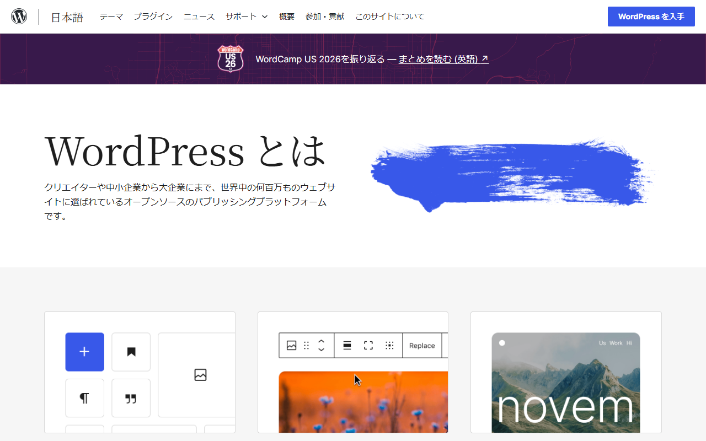

Webflowは日本語で使える？UIの日本語化とサイト制作・サポートの対応範囲
Webflowは、デザイナーや制作担当者がコードを書かずにWebサイトやCMSを設計・公開できるサービスです。
管理画面の日本語化と日本語サイトの制作は、別の話です。この記事では両者の違いに加え、Localizeと日本語サポートの範囲を解説します。設定方法や料金に加え、代替候補も取り上げます。
Webflowの日本語対応状況を5項目で確認
- 管理画面：公式の日本語切り替えは未確認
- 日本語サイト：本文・CMS・フォームに対応
- 多言語化：Localizeは公開サイト向け
- 学習資料：公式教材とヘルプは英語
- 無料枠：Starterで2ページまで制作
英語UIでの操作に抵抗がなく、日本語のCMSサイトを細かく設計したい人にはWebflowが向きます。無料のStarterから試せます。
無料登録の入口と、Webサイト制作に使える主な機能が分かります。
管理画面の日本語化と日本語サイト制作は別
Designerやサイト設定が英語表示でも、日本語のサイトは作れます。ページ本文とCMSの項目には日本語を入力でき、サイトの言語コードも日本語に設定できます。
Webflowを選ぶときは、英語画面で制作できるかと、日本語サイトを公開できるかを別々に判断します。
Webflow Localizeは管理画面の翻訳機能ではない
Webflow Localizeは、公開サイトの本文や画像を言語・地域ごとに切り替える機能です。表示条件やSEO設定も変えられますが、管理画面は日本語になりません。
Webflowの管理画面を日本語化する方法

公式サイトは英語表示で、画面上部に無料で始めるボタンがあります。
管理画面を日本語で表示したい場合は、第三者が提供するChrome拡張を使えます。拡張を入れたくなければ、Chrome標準の翻訳で一部を日本語にできます。どちらもWebflow公式の機能ではない点に注意。使う前に、提供元と対応範囲を確かめてください。
Chrome拡張「Webflow 日本語化」を導入する
Chrome Web Storeで「Webflow 日本語化」を検索します。そこで見つかるのが、IGNITE Co., Ltd.が開発した拡張機能です。同じ名前の拡張を案内する会社もあります。掲載ページにある提供元の表示で見分けてください。導入の流れは次のとおりです。
- ChromeでChrome Web Storeを開き、「Webflow 日本語化」の掲載ページを表示する
- 提供元がIGNITEであることと、要求される権限を確認してから「Chromeに追加」を選ぶ
- Webflowにサインインし、ダッシュボードとDesignerを開く
- メニューや設定パネルが日本語で表示されているかを確かめる
開発元のIGNITEは、この拡張を無料で提供すると案内しています。翻訳されるのは、ダッシュボードやDesigner、Site Settingsなどの画面。開発元によると、CMS・Body・Div Blockといった用語は英語のまま残しています。公式ヘルプと表記がそろうため、必要な情報を英語で探しやすくなります。
Chrome標準翻訳で補う
拡張を入れたくない場合は、画面を右クリックして「日本語に翻訳」を選びます。Chromeのページ翻訳で、表示中のテキストを日本語にできます。
ただし、汎用の翻訳はWebflow固有の用語もそのまま訳します。「Collection」や「Div Block」が不自然な日本語になったり、パネルの表示が崩れたりする場合もあります。意味を知りたい画面だけで使うのが無難です。
拡張機能を入れる前に確認すること
翻訳拡張は、Webflowにログインした後の文字を書き換えて動きます。Chrome Web Storeの掲載ページでは、IGNITEの拡張の最終更新は2026年2月。Webflowが画面を変えると、翻訳が追いつかない箇所も出てきます。業務アカウントで使う前に、次の2点を見ておきます。
- 掲載ページに表示される権限の内容と、社内のブラウザ拡張の利用ルールに合うか
- 翻訳されずに英語のまま残る画面があっても作業に支障がないか
表示の崩れや不具合が起きた場合、Webflowの公式サポートは拡張を無効にして原因を切り分けるよう案内しています。解決しないときは提供元へ問い合わせ、拡張自体の不具合はIGNITEに相談してください。
英語版の公式メニューから、製品情報や料金ページへ移動できます。
Webflowで日本語サイトを作るときの設定と注意点
管理画面の言語に関係なく、本文とフォームは日本語で作れます。CMSにも日本語を登録でき、各ページのSEO設定にも使えます。公開前に見直す項目は、言語コードと画面表示。
日本語の本文・CMS・フォームを設定する
日本語サイトとして公開するなら、日本語にしておくべき要素はページ本文だけではありません。
- ページ本文・ボタン・ナビゲーションの文言
- CMSのコレクションに登録する記事や商品情報
- フォームのラベル・送信ボタン・送信後の成功・エラーメッセージ
- 各ページのSEOタイトル・メタディスクリプション・画像のalt
- 言語コード：Localizeパネル > Localesで主要ロケール（primary locale）の言語を日本語にすると、jaが割り当てられる
言語コードは、ページの言語をブラウザや検索エンジンに伝える設定。現在のWebflowでは、Localizeパネルの主要ロケールが優先されます。Site settingsには旧来の言語コード欄も残っています。英語圏向けのテンプレートを使うなら、フォームやフッターに英語の初期文言が残っていないかも見直します。
日本語フォントと改行を端末別に確認する
Webflow Marketplaceには無料と有料のテンプレートがあります。有料テンプレートはSite planとは別の一回払いで、ライセンスは原則として1案件限り。欧文向けのテンプレートに日本語を入れると、見出しが途中で折り返すことがあります。行間が詰まって見える場合もあるため、選ぶ前に日本語での表示も試してください。
公開前は、パソコンとスマートフォンの両方でプレビューします。日本語フォントと行間の読みやすさに加え、見出しの折り返しや行頭の句読点も確かめます。
多言語サイトにはWebflow Localizeを使う
日本語と英語など、複数の言語・地域向けにサイトを出し分けたい場合はWebflow Localizeを使います。locale（言語・地域の設定）ごとに本文や画像を切り替え、表示・非表示やSEO設定も個別に指定できます。
日本語に加えて別の言語を出すときは、Site planとは別に有料のLocalizeプランが必要です。料金はEssentialが月$9から、Advancedが月$29から。利用量によって変わります。日本語だけで公開する間は、別の言語が必要になってから検討しても遅くありません。
サイト制作とCMSに加え、多言語展開に使える機能も見られます。
日本語で学べる資料とサポートの範囲
公式のWebflow UniversityとHelp Centerでは、操作を学んだり、問題の解決策を調べたりできます。ただし、公開されている公式ページは英語。国内の日本語記事や制作会社の支援は、Webflow公式の日本語サポートとは分けて考えてください。
公式教材はブラウザ翻訳も使って学ぶ
学習用の公式リソースは、役割ごとに分かれています。
- Webflow University：動画とレッスンで操作を体系的に学ぶ教材
- Help Center：機能ごとの設定手順や請求の仕組みを調べるヘルプ
- コミュニティフォーラム：ユーザー同士で質問し合う場
英語が苦手でも、ページはChromeで翻訳して読めます。操作名だけ英語のまま覚えておくと、教材を使いやすくなります。
日本語の学習資料と日本語有人サポートは別
国内の制作会社や個人が提供する日本語の解説記事や講座、制作支援は、Webflow公式の窓口ではありません。公開情報では、公式の日本語有人サポートも未確認。ただし、公開情報だけで「対応していない」とは断定できません。日本語対応が契約の条件なら、申し込む前に問い合わせてください。
公式のResourcesメニューから、英語の教材やヘルプへ進めます。
料金と始め方：無料プラン・支払い・請求書・解約
Starter SiteとStarter Workspaceは無料です。日本からは主要なカードでUSD決済。 有料化するときは、サイトごとのSite planとチーム単位のWorkspace planを別々に契約します。
無料のStarterから始める
登録すると無料のStarter Workspaceが付与されます。サイトは無料のStarter Siteで作り始められます。公開先はWebflow.ioのサブドメイン。上限は静的ページ2ページ、CMSアイテム50件までです。管理画面の操作感や、日本語の本文とCMSの表示を試すには十分な範囲です。Starter Workspaceで使えるFull seatは1つだけ。複数人で編集する場合は、Workspace plan（Core $19/月、Growth $49/月。いずれも年払いの月額換算）に切り替えます。必要に応じてseat（Full $39/月、Limited $15/月。年払い）も追加します。
独自ドメインで公開するには、サイトごとに有料のSite planが必要です。CMSを使わない静的サイトにはBasicを選びます。料金は年払いで月$15（月払いは$25）。ブログやお知らせなどCMSを使うならPremiumで、年払いで月$25（月払いは$39）です。BasicはCMSに対応していません。1ドル=159円で換算すると、Basicは約2,385円、Premiumは約3,975円です。この金額は執筆時点の目安で、為替により変動します。
Starterの上限や、BasicとPremiumの違いを確認できます。年払いと月払いの差も分かります。
日本からの支払いと請求書
Webflowは日本から公式サイトで申し込めます。利用できるクレジットカード・デビットカードは次の6ブランドです。
- Visa
- Mastercard
- American Express
- Discover
- JCB
- Diners Club
請求はUSDで、表示価格には適用税が別途加算されます。
Workspace設定のBillingでは、各契約のPDF請求書を個別にダウンロードできます。表記はUSDのみ。複数のSite planやWorkspace planの請求は1枚にまとめられません。USD建ての請求書を消費税やインボイス制度でどう扱うかは、税理士に確認してください。
Site planとWorkspace planを解約する
解約は、契約ごとに別の設定画面で手続きします。
- Site plan：Site settings > Plansから無料のStarterへダウングレードする
- Workspace plan：Workspace settings > Plansから無料のStarterへダウングレードする
- 別契約の扱い：片方を解約しても、もう片方の契約と自動更新は止まらない
- 解約後の利用：原則として当期の終わりまで使える
SiteまたはWorkspaceを新規購入した初回に限り、購入から14日以内なら返金を申請できます。更新料・Add-on・seat・Marketplaceでの購入は対象外です。
Site planとWorkspace planの違いや請求周期を、契約前に見られます。
日本語での制作を優先する場合の代替候補
公式の日本語UIと日本語サポートを優先するなら、候補はStudio。日本語の情報量やサーバー構成の自由度も重視する人には、WordPress（WordPress.org版）が合います。Framerは日本語のLocalizationに対応しています。ただし、エディタの日本語UIは未確認。エディタを日本語表示したい人は、契約前に対応状況を確かめてください。
Studioは公式の日本語UIとサポートを重視する人向け

公式サイトは日本語で表示され、無料で始めるボタンもあります。
- 日本語UI：管理画面・エディタ・公式ヘルプが日本語
- 日本語サポート：ログイン後のチャットサポート、法人向け相談窓口
- 公開方法：ホスティング込み。料金はサイト（プロジェクト）単位
日本居住者は円建て・税込で契約でき、JCBのカードも使えます。請求書と領収書はダッシュボードのお支払い履歴から取得でき、適格請求書の発行案内もあります。無料のFreeは50ページまで公開可能。独自ドメインを接続するにはMini以上が必要です。Miniは年払いで月¥590（税込、月払いは¥1,290）で、支払い済みの料金は原則として返金されません。初回購入から14日以内なら返金を申請できるWebflowとは、この点が異なります。
プランごとのページ数やCMSの上限を、日本語の料金ページで見比べられます。独自ドメインで公開する前に、作りたいページ数がプランの上限に収まるかも分かります。
WordPressは日本語情報とサーバー管理の自由度を重視する人向け

日本語版の公式サイトには、テーマ・プラグイン・サポートへのメニューがあります。
- 日本語UI：日本語ローカライズ版を配布し、日本語の公式サイトとドキュメントがある
- 日本語サポート：日本語のサポートフォーラム。コミュニティによる回答で、有償の有人サポートではない
- 公開方法：自前のホスティングとドメインが必要
ソフトウェア本体はGPLで公開されており、商用利用でもライセンス料は不要。その代わり、サーバーとドメインは各事業者と別に契約します。更新・バックアップ・セキュリティ対策も、サイトの管理者が担います。
費用の大半はサーバーとドメインの契約で決まります。使う予定のレンタルサーバーの料金と並べて見積もると、Webflowの月額と比べやすくなります。
Framerの日本語UIは未確認

公式サイトは英語表示で、無料で始めるボタンとアプリのダウンロードリンクがあります。
- 日本語UI：エディタを日本語表示にできるかは確認できない
- 日本語サポート：日本語での問い合わせ対応は確認できない
- 公開方法：ホスティング込み。料金はUSD基準で表示
FramerのLocalizationは日本語を含む238の言語・地域に対応し、公開サイトを多言語化できます。ただし、Webflow Localizeと同じく訪問者向けの機能。英語の画面を避けるために乗り換えても、状況は変わらない可能性があります。料金は無料のFreeのほか、独自ドメインを使えるBasicが年払いで月$10。日本発行のカードやJCBで支払えるかは、公式情報に明記がありません。
独自ドメインを使えるプランと、プランごとのCMSコレクション数・帯域の違いを見比べられます。
Webflowの日本語対応でよくある質問
Webflowに公式の日本語切り替え設定はありますか？
公開されている公式情報では、管理画面の表示言語を日本語に切り替える設定を確認できません。公式のHelp Centerも英語版のみ。日本語で操作するには、現時点ではIGNITEの拡張かChromeのページ翻訳を使います。
Chrome拡張は無料で安全ですか？
料金は無料。開発元のIGNITEは、利用者のデータを収集・使用しないと表明していますが、第三者が安全性を保証したものではありません。業務アカウントで使うなら、掲載ページに表示される権限を社内のルールと照らし合わせてから入れてください。
日本語で問い合わせできますか？
Support Portalから送った問い合わせには、メールで回答が届きます。もう一つの公式窓口は、AIのサポートアシスタントによるチャットです。担当者につながるかは、内容と時間帯次第。電話やビデオでの対応はEnterpriseだけです。ほとんどの利用者は、英語のメールかチャットで問い合わせることになります。
まとめ：管理画面と公開サイトのどちらを日本語にしたいかで選ぶ
日本語サイトを作ることが目的なら、Webflowも選択肢。 管理画面は第三者のChrome拡張で補えます。公式の日本語UIや日本語の有人サポートが欠かせない場合は、StudioやWordPressとも比べてください。
Webflowが向く人
次の条件に当てはまるなら、まず無料のStarterで使い勝手を試せます。
- 日本語の本文やCMSを、デザインの自由度を保ったまま作りたい（CMSを使うならPremiumの費用を見込める）
- 英語の管理画面か、第三者拡張による日本語表示で作業できる
- 英語の公式教材とヘルプを、翻訳を使いながら参照できる
- USD建てのカード決済と、契約ごとに分かれた請求書で経理処理できる
日本語UIを優先して比較したい人
次のような条件があるなら、Webflowに決める前にほかのツールも比べてください。
- チーム全員が日本語の画面で操作する必要がある
- 日本語で公式窓口に問い合わせられることが導入の条件
- 円建ての請求や適格請求書が経理上必要
まずはStudioとの比較から。サーバーの管理も担えるなら、WordPressも候補に加えます。Webflowも試す場合は、無料枠で操作感を確かめてから有料化を判断できます。
無料のStarterで使える範囲が分かります。独自ドメインで公開する条件や、年払いと月払いの請求周期も見られます。